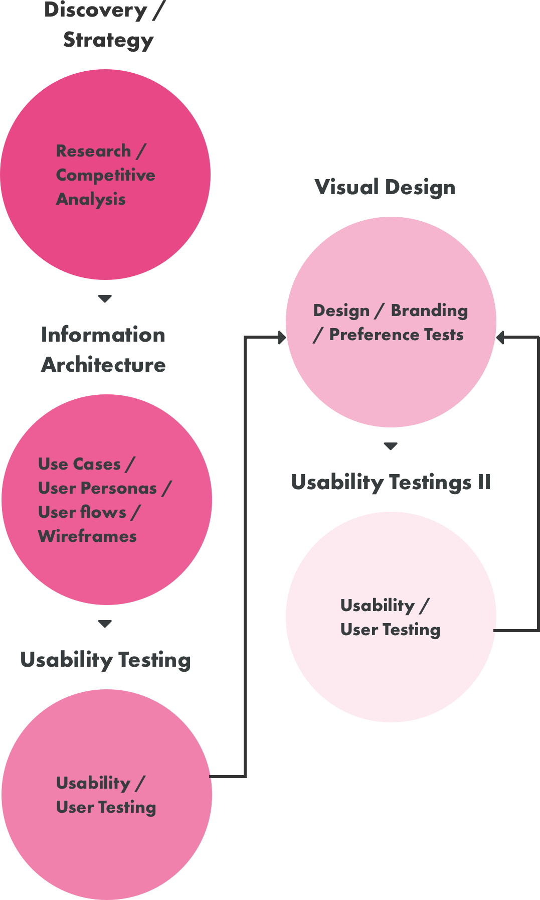
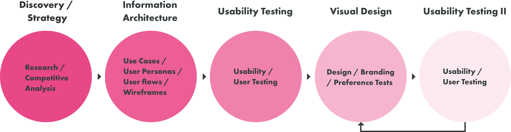
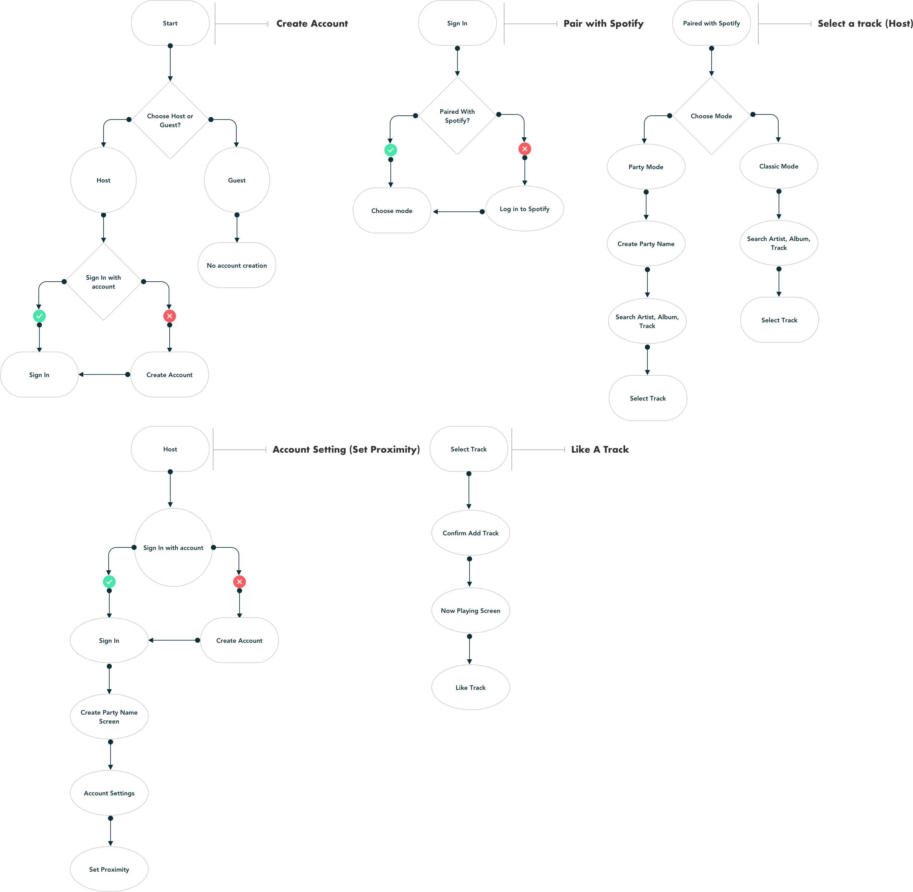
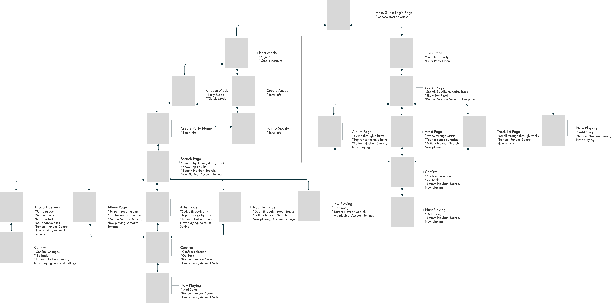
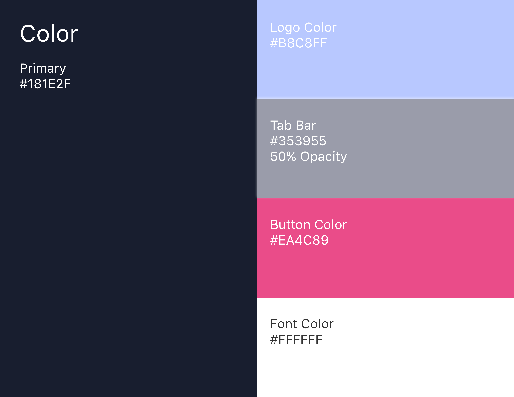
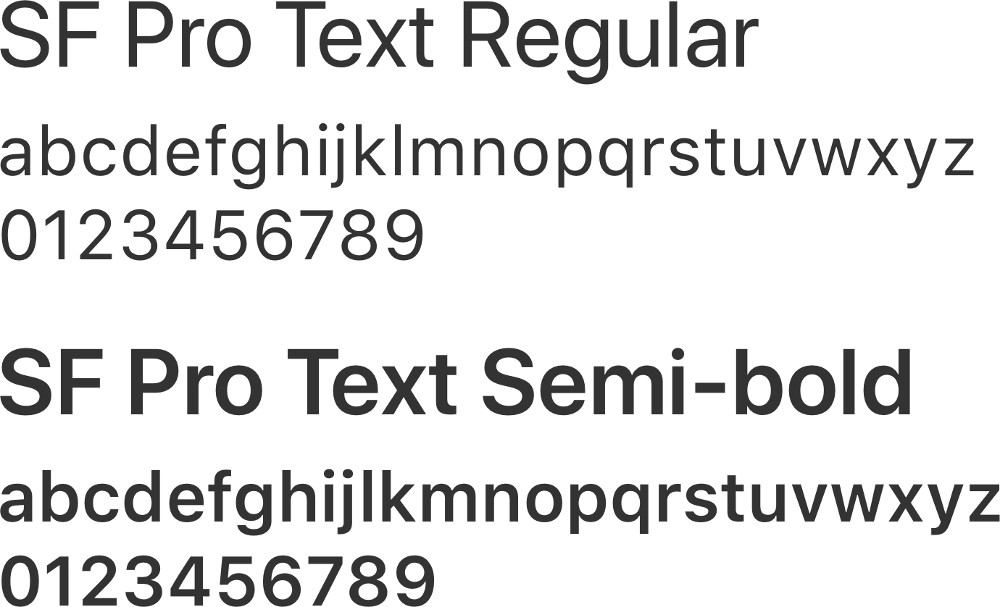
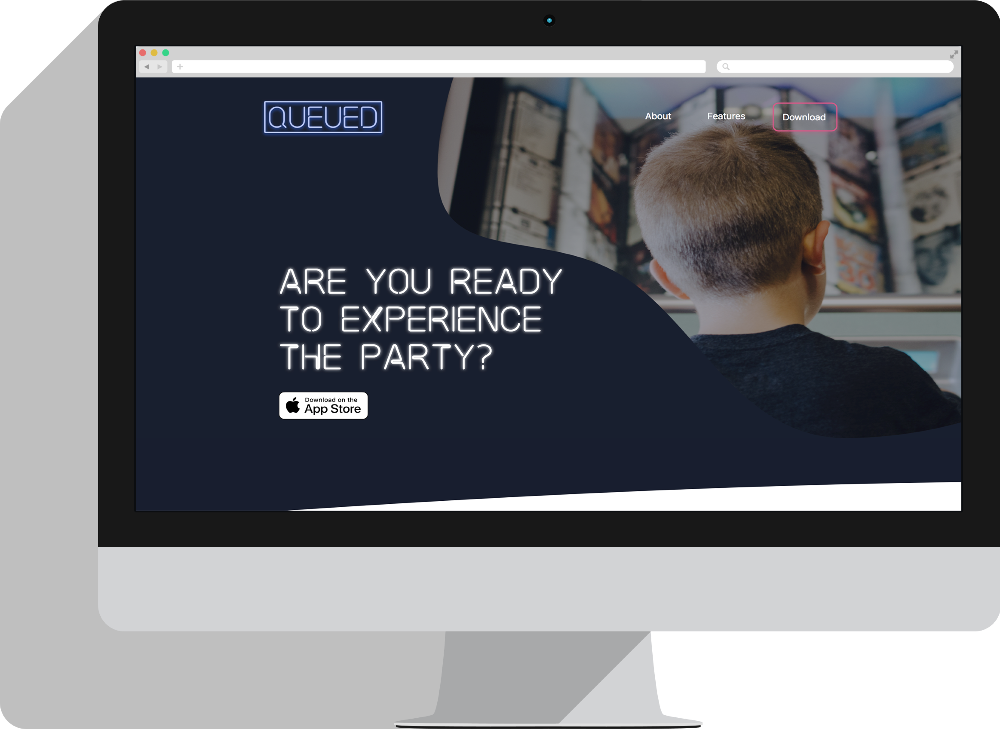

SUMMARY
Jane loves to have dinner parties and make playlists for the event. Her friends often complain about her taste in music, they always ask to her to play certain tracks or to "switch it up". They talk about the good old days when you could use a jukebox and everyone could hear what they wanted to hear and get a turn. They think music applications are so complicated to use and none of them let your guests add to the queue but not anymore! This is just one example a frustration that led to the creation of Queued.
PROBLEM
Music applications lack the ability to give your guests control and let everyone experience the fun.
- Applications are too complicated to meet the needs of wide age groups that aren't used to technology
- Most applications are missing the option to queue music to a playlist
- Technology is forcing people to be less engaged with each other in the music market
- You have to create an account or have a subscription for most applications
SOLUTION
Queued is a music application that allows the host to create a party playlist and give the guests the party passcode. The host will choose either engaged mode which allows users to add songs and then like or dislike them. If a song is disliked more than it is liked before the current playing song ends then that song will me moved to the end of the queue. The second mode is classic mode and it functions just like a classic jukebox. If a song is added to the queue then it will be played in the order it was added. The host can determine how many songs a guest can add per hour and is the only one that can delete songs from the queue.
MY PROCESS
 COMPETITIVE ANALYSIS
The music application scene is built on many recognizable names like Spotify, Pandora, Apple Music, and Amazon Music services however, the largest companies all lack the ability to allow guests to queue music to one curated playlist at the same time. There are 3 popular companies that are currently doing various versions of this but all lack either key features or clean and easy to user interfaces. Check out my full analysis to see how I identified a way to break into a competitive market.
View AnalysisUSER RESEARCH HIGHLIGHTS
96%
People use music application programs
63%
Said they want to be able to be able to add their favorite tracks to playlists at parties and events
30%
People pay a monthly subscription fee. The cost is the determining factor behind such low results
48%
Said they would pay for an app that allowed guests to control the music. This was the determining factor to create an application that allowed guests to use the hosts subscription service.
USER PERSONAS
Mike
38 y/o Photographer
“Every party I go to people seem disengaged. Between taking pictures to post on instagram and sending out tweets no one is talking to each other!”
Goals
Mike's goal is to get people to engage with each other in social environments. He would love if him and his friends wish technology could be used to bring people together.
Cheryl
65 y/o Retired School Teacher
“Technology is so complicated, I remember when I could push one button to get through the jukebox music and another to select the song!”
Goals
Cheryl's goal is to get find a music app that is free to use, doesn't require an account to use and has a simple user interface that she can navigate.
USER STORIES
Once we identifed the opportunity for a new music application and had research to back it up user stories were created to highlight the main features of the product and determine an MVP. The user stories were then pulled into sketch and mapped to user flows.
View User StoriesUSER FLOWS
SITEMAP
Once I had a mapped out user flow then I continued on in the process and built out a sitemap so I had a skeleton structure to begin creating wireframes and artboards. The application will have a host and guest path that the user's can take so the sitemap below represents those two paths broken into screens.
BRANDING
Logo
No branding assets or content had been created beforehand. The process began with mind-mapping to start to establish a brand name. Once a brand name was selected we then began the logo design by sketching. We tried a few different angles and then did testing to help us make the decision on the logo. After iterating the logo to get the sizing and font selection right we were able to move on to typography and color palette.
Color Palette
Bold and classic. The color palette was chosen with the intentions of using minimal choices but focusing on bold classic combinations that are influenced by the New England Culture. Inspiration was drawn from the green pines to the dark blues and grays from where the forest and fields meet the ocean. Secondary colors will be based on lighter hues of main 3 color choices. The green background cannot be used with red text vice versa due to contrast issues.
Typography
SF
San Francisco
The system font for iOS, macOS, tvOS, and watchOS.
WIREFRAMING
Initial wireframing was done by sketching and then iterated in Balsamiq. We narrowed it down to two layouts and then completed testing to determine the right layout before moving into the visual design.
Pen and Paper Wireframe Sketching

Layout Version 1

Layout Version 2

VISUAL DESIGN
Once the project moved into the visual design phase I used sketch as my design program of choice. I started with a layout that featured a large hero image to capture the attention of the user and begin telling the brand story. After the initial layout was completed I also made an alternate version that tried to convert the customer first and took a sales driven approach. Both of these layouts were tested using usability hub the results proved that the sales driven approach would be the most effective. A final version was ready for the development phase.
Design Version 1


Empathy Approach

Sales Driven Approach/Final Design

USER TESTING II
I used Usability Hub for my testing. I completed testing the initial layouts, surveys and user research on the coffee shop and preference testings on the alternate approaches to the site layout.
User Survey Questions
The user survey I created was used to determine the problems faced with traditional coffee shops and whether or not a subscription based service would solve those problems for the user.
View User Survey ResultsWireframe Layout Preference Test
I created a preference test for the initial wireframe layouts to determine how the site should flow and whether or not I should start with a large hero image.
View Preference TestEmpathy Vs Sales Driven Approach Preference Test
Final testing was done on the a empathy driven that layout that foused on telling the brands story to created a connection with the user before the sale and the second layout focused on taking a sales driven approach right from the start and telling the brands story as you flowed down the page.
View Layout TestDEVELOPMENT
For this project I decided to code a product landing page for the application. I wanted to create a website that would give the potential users an understanding of the goals of Queued with the intentions of converting them into customers. The site is built with HTML, CSS, JQuery and uses CSS grid layout for responsiveness.
CONCLUSION
Two Pines product showcase wasn’t about building a visually appealing website that would show some coffee packaging. It was about creating and inventing a brand that had a real story behind it that would connect its users to the brand through empathy and use the design process to do that. It was also about solving a real problem which is finding great coffee and being able to enjoy it at a coffee shop has become a real issue between long lines, expensive roasts and lack of space. With Two Pines subscription service you can enjoy the best coffee wherever and whenever you want!